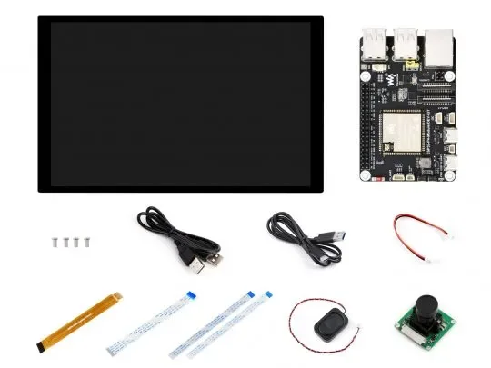

ESP32-P4-Module-DEV-KIT-C
Waveshare · ESP32-P4-Module-DEV-KIT-C (with 10.1-DSI-TOUCH-A 10.1inch display)
ESP32-P4-Module-DEV-KIT-C is an 10.1" 800x1280 IPS Capacitive touch ESP32 display board by Waveshare based on the ESP32-P4 with 16MB NOR (on module) flash, 32MB (in package) PSRAM.
Features, ports & interfaces
- MIPI-DSI display (2-lane)
- Capacitive touch (GT9271, 10 points)
- 32 MB PSRAM (in package)
- 16 MB flash (NOR)
- microSD (TF) card slot (SDIO 3.0)
- Wi-Fi 6 (802.11ax, 2.4 GHz) via ESP32-C6 co-processor – version from the ESP32-C6 datasheet
- Bluetooth 5.3 (LE) via ESP32-C6 co-processor – version from the ESP32-C6 datasheet
- Thread (802.15.4) – IEEE 802.15.4 radio of the ESP32-C6 co-processor – SoC capability per the Espressif datasheet; needs firmware support
- Zigbee (802.15.4) – IEEE 802.15.4 radio of the ESP32-C6 co-processor – SoC capability per the Espressif datasheet; needs firmware support
- Matter-capable radio (Wi-Fi / Thread) – ESP32-C6 co-processor capability per the Espressif datasheet; firmware-dependent
- USB-C (USB-to-UART)
- USB-A host (USB 2.0 OTG HS, host mode via jumper)
- Ethernet RJ45 100 Mbps
- PoE – module header (PoE module not included)
- GPIO header 40-pin (28 programmable GPIO)
- Speaker header (MX1.25 2P, 8 Ω 2 W)
- Onboard microphone
- MIPI-CSI camera connector (2-lane)
- RTC with backup battery holder (rechargeable cell)
Specifications
| Parameter | Value | Source |
|---|---|---|
| Screen size | 10.1" | source |
| Resolution | 800x1280 | source |
| Panel | IPS | source |
| Shape | Rectangular | source |
| Display interface | MIPI-DSI | source |
| Touch | Capacitive | source |
| Touch controller | GT9271 | source |
| MCU / SoC | ESP32-P4NRW32X (ESP32-P4-Module) | source |
| MCU family | ESP32-P4 | source |
| Co-processor | ESP32-C6 (SDIO) | source |
| CPU frequency | up to 400MHz (HP) / 40MHz (LP) | source |
| Flash | 16MB NOR (on module) | source |
| PSRAM | 32MB (in package) | source |
| SRAM | 768KB HP L2MEM + 32KB LP SRAM | source |
| Wi-Fi | Wi-Fi 6 (via ESP32-C6) | source |
| Bluetooth | Bluetooth 5 (LE) | source |
| USB | USB 2.0 OTG HS Type-A (host mode via jumper) + Type-C UART | source |
| SKU | 30844 | source |
| Category | Waveshare ESP32-P4 | |
| Active area | 135.36 × 216.58 mm | source |
| Audio | Codec + amplifier, onboard microphone, speaker header (MX1.25 2P, 8Ω 2W) | source |
| Brightness | 400cd/m² | source |
| Camera | MIPI-CSI 2-lane (RPi Camera (B) included in kits B/C) | source |
| Contrast | 800:1 | source |
| Dimensions | 147.0 × 239.0 mm (display outline) | source |
| Display module | 10.1-DSI-TOUCH-A | source |
| Ethernet | 100Mbps RJ45 | source |
| Form factor | Dev board + separate DSI display | source |
| Glass | Optical bonding toughened glass | source |
| GPIO | 40-pin header (28 programmable GPIO) | source |
| Interface detail | MIPI 2-lane (external DSI panel) | source |
| Operating temp. | 0℃ ~ 60℃ | source |
| Pixel pitch | 0.1692 × 0.1692 mm | source |
| PoE | Reserved PoE module header (PoE module not included) | source |
| ROM | 128KB HP + 16KB LP | source |
| RTC | RTC battery header (rechargeable only) | source |
| SD / TF | TF card (SDIO 3.0) | source |
| Speaker interface | Yes | source |
| Touch points | 10 | source |
| Vendor | Waveshare | |
| Viewing angle | 178° | source |
Official links & documentation
Files
Offline copies are available on the interactive page.
Notes
- User-supplied description mentioned '4× USB-A host'; the Waveshare sources found list one USB 2.0 OTG Type-A port (host mode switchable via jumper) — not confirmed, left out.